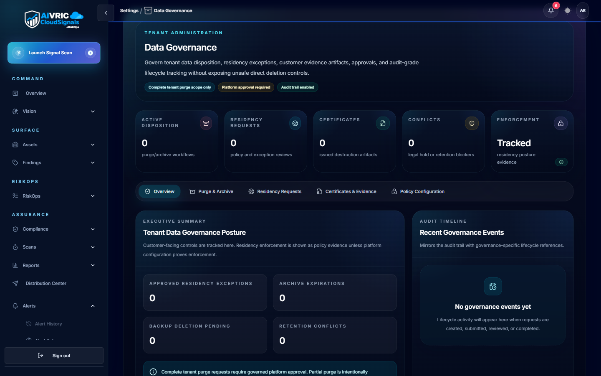
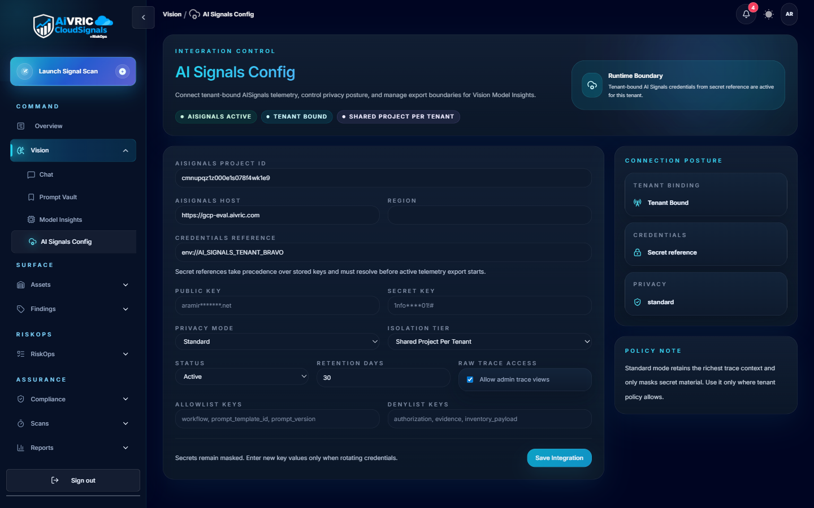
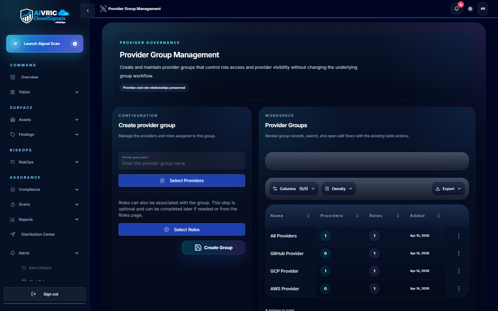

Provider Admin & CRPM Operations
This course teaches Provider Administrators how to configure and operate the CloudSignals provider instance — from Provider Console daily operations through GRC Administration, RiskOps entitlement control, AI configuration, and the recurring administrative review cadence.
Provider Console
Your primary workspace for provider health, client status, and administrative activity.
What the Provider Console is
The Provider Console is the administration workspace for provider operations. It is where admins manage downstream clients, control entitlements, review billing drafts, track support cases, configure branding, and audit provider team activity. It is not the same as the standard CloudSignals operating workspace that operators use for scans, findings, and risk work.
Provider Console dashboard
The dashboard gives a snapshot of provider workspace health. Review these items every day during launch and every week during normal operations:
| Dashboard item | What it tells you | When to act |
|---|---|---|
| Managed client count | Total active downstream clients | When the count drops unexpectedly — may indicate an accidental status change |
| Onboarding count | Clients in onboarding state | When this number is high and not declining — clients may be stuck |
| Needs action count | Clients flagged for provider attention | Immediately — Needs Action means a client has an unresolved issue requiring your team |
| RiskOps module state | Whether RiskOps is enabled for this tenant | Whenever the state doesn't match your expectation — mismatched state can affect user navigation |
| Billing exceptions | Invoice or billing items requiring review | Before any client-facing billing communication |
| Command queue | Pending administrative commands or operations | When items are stuck or erroring |

Client Lifecycle Management
Manage every client from initial onboarding through eventual offboarding.
Client lifecycle states
Every client record in the Provider Console has a lifecycle state. Keeping states accurate is essential — it affects reporting, billing, and support priority routing.
| State | Meaning | Key actions |
|---|---|---|
| Prospect / Planned | Client is approved but not yet onboarding | Create client record, assign provider owner, document package |
| Onboarding | Environment connection and first scan in progress | Connect cloud environment, run first scan, validate findings, schedule first review |
| Active | Fully onboarded, receiving ongoing service | Monitor scan health, track findings/risk treatment, deliver recurring reports |
| Needs Action | Something requires provider attention | Investigate root cause immediately — this should not sit unresolved |
| Paused | Service activity paused, typically for commercial reasons | Confirm reason, pause scans, preserve records, communicate with client owner |
| Offboarding | Client is leaving the service | Confirm termination date, export final reports, remove access, stop scans |
| Archived | Client is fully offboarded; records retained per policy | Follow data retention and deletion requirements; document closure |
Expanding a client
When an active client adds new cloud accounts, services, or environments:
- Confirm that the expanded scope is within the client's current package entitlement.
- Confirm updated pricing or package change with the provider commercial owner before connecting new environments.
- Add the new environment in CloudSignals, run a validation scan, and update the client's managed entity mapping.
- Update the reporting scope and support expectations to reflect the expanded footprint.
Offboarding a client — checklist

Branding Administration
Configure, publish, and validate provider branding for light and dark mode.
The publish vs. save distinction
This is the single most common branding mistake: saving a draft does not apply changes. The branding workflow has two steps — save (stores your configuration) and publish (applies it to the live portal). Many providers spend time troubleshooting why branding isn't appearing after saving, when the issue is simply that the draft was never published.
Troubleshooting: logo does not appear
| Symptom | Likely cause | Fix |
|---|---|---|
| Logo URL is correct but image is broken | File requires sign-in to access | Move logo to a public CDN, object storage bucket, or your website's static assets folder |
| Logo appears in light mode but not dark mode | No dark logo URL configured | Add a dark-mode specific logo URL, or ensure the light logo has a transparent background that works on dark backgrounds |
| Logo still shows old version after updating | Draft was saved but not published, or browser cache | Publish the draft, then hard-refresh |
| Logo displays externally but not inside the portal | Content-Security-Policy or CORS restriction on the hosting origin | Host the logo on a permissive HTTPS origin (CDN or your own domain); escalate to AiVRIC if the issue persists |

GRC Administration
Create managed entities and GRC users in the correct order to enable risk operations.
The two-object GRC model
GRC Administration manages two core record types that power RiskOps workflows:
Managed Entities
An organizational profile representing a client, business unit, subsidiary, or internal reporting scope. Managed entities are the GRC anchor for risk records, asset ownership, business process mapping, and regulatory context.
Create these first, before creating GRC users.
GRC Users
A governance user profile with skills, roles, regulatory scope, and ownership relationships. GRC users are linked to managed entities to define who is responsible for each entity's risk and compliance activity.
Create these after managed entities exist.
Creating a managed entity
Creating a GRC user
Common GRC setup issues
| Issue | Cause | Resolution |
|---|---|---|
| Managed entities don't appear in GRC user association | Entities don't exist yet, or they are in an inactive state | Create active entities first; then return to GRC user profile and search by name |
| GRC user can't access RiskOps records | GRC role not assigned, or RiskOps entitlement not enabled for the tenant | Assign the appropriate GRC role; confirm RiskOps entitlement is on (see Module 5) |
| Entity association shows in create mode but not edit mode | Edit mode may not reload the full entity list automatically | Refresh the page; confirm entity is active; escalate if issue persists |

RiskOps Entitlement
Enable or disable RiskOps and verify the expected state in navigation and GRC.
What RiskOps entitlement controls
The RiskOps entitlement toggle controls whether the RiskOps module — business processes, scenarios, risk register, treatments, quantification, and security exceptions — is accessible in a tenant. GRC Administration is always available to provider administrators regardless of RiskOps entitlement state — disabling RiskOps removes the operational risk workflows but does not remove managed entities, GRC users, or GRC AI settings.
Default behavior
- Provider and white-label tenants default RiskOps to disabled at provisioning.
- Provider Admins can enable or disable RiskOps for their own tenant (when allowed by their entitlement configuration).
- Provider Admins can enable or disable RiskOps for downstream clients.
- Existing commercial CloudSignals tenants keep their current RiskOps behavior — the toggle does not retroactively change behavior for tenants where RiskOps was already active.
After enabling RiskOps — verification checklist
After disabling RiskOps — verification checklist
AI Configuration
Configure Vision AI and GRC AI independently — they are not the same setting.
Two AI configuration areas — two separate controls
CloudSignals has two separate AI configuration areas. This is the most common source of AI-related support tickets: providers configure one area and expect it to apply to both. It does not.
Vision AI Configuration
Controls: Vision Chat, Prompt Vault assisted runs, Model Insights, and Vision-oriented analysis.
Location: Vision > AI Signals Config (or Vision Model Configuration)
Changing this does not update GRC AI features.
GRC AI Configuration
Controls: GRC and RiskOps AI support, risk narrative assistance, governance summaries, GRC administrative AI features.
Location: Settings > GRC Administration > AI Settings
Changing this does not update Vision Chat.
If GRC risk narratives aren't working: Check GRC AI settings — not Vision AI.
Configuring one area does not configure the other. If your provider instance uses both Vision and GRC/RiskOps AI, you must configure both areas.
Required fields for AI configuration (both areas)
- Configuration name — a descriptive name for this configuration record.
- Provider — e.g., OpenAI, Azure OpenAI.
- Endpoint or model deployment reference — the API endpoint for the configured model.
- Model — the specific model version (e.g., gpt-4o, claude-3-5-sonnet).
- Temperature — keep low (0.1–0.3) for security and compliance analysis. Higher temperature increases creative variation, which is not desirable for factual risk outputs.
- Max tokens — sufficient context window for long findings, reports, and evidence summaries.
- API key or credential reference — rotate per your provider key policy.
- Business context — a brief description of the provider or client context; used by the model to calibrate responses.
Validation after configuration

Operating Cadence & Quality
The recurring administrative rhythm that keeps the provider service healthy.
Provider Admin operating cadence
| Cadence | Key activities |
|---|---|
| Daily | Review Provider Console dashboard (Needs Action, stuck onboarding, command queue). Check scan failures and stale scan status. Review critical and high finding changes. Check urgent support cases. |
| Weekly | Review asset ownership gaps. Review unassigned findings and overdue remediation. Review RiskOps work queues. Review managed entity mapping changes (after any client onboarding/offboarding). Review open security exceptions. Prepare client operating notes. |
| Monthly | Review provider user access — remove stale accounts. Review Provider Admin and GRC Admin roles. Review client package and entitlement alignment. Review branding (confirm it still renders correctly in both themes). Review report distribution recipients. Review accepted risks and exceptions. Review AI settings and key rotation schedule. |
| Quarterly | Review role model — is every role assignment still appropriate? Review service package definitions. Review scan coverage across all clients. Review offboarded clients and inactive users. Review data retention and reporting practices. Update training material if product has changed significantly. |


Provider quality standards
When to escalate to AiVRIC
The following conditions should be escalated to AiVRIC support — do not attempt to resolve these through provider-side configuration changes alone:
- Provider portal is unavailable or returns 5xx errors.
- Branding does not render after publishing and validating the URL.
- RiskOps entitlement state does not match navigation or API behavior after re-enabling.
- GRC Administration endpoints return errors for a valid Provider Admin.
- Managed entities don't appear in GRC user association after being created and confirmed active.
- AI model configuration fails with confirmed valid credentials and endpoint.
- Scan failures persist after cloud access has been re-validated.
- Dashboards show inconsistent data that doesn't update after scan completion and refresh.
- A security, privacy, or data exposure concern is suspected.